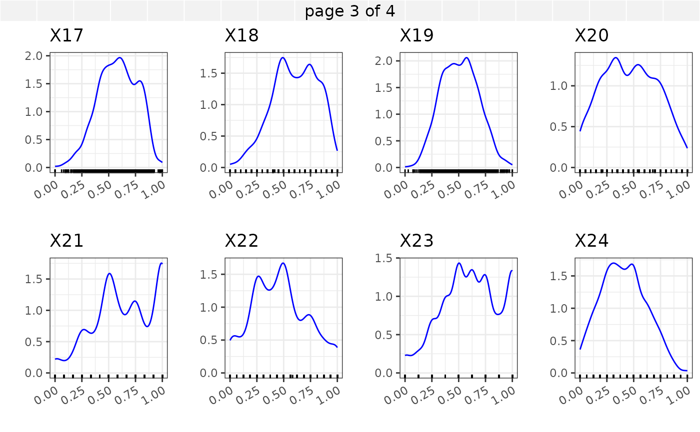

a04_synthetic_data.RmdAs described in Sun et al. (2024) the data set is a synthetic data generated from a pool of clinical trial data. The ‘’synthpop’’ function from the “synthpop” R package with default options was used to generate a synthetic version of the original data. For the sake of confidentiality we renamed the covariates into \(X_1, X_2, \ldots, X_{30}\). In addition the factor levels of the categorical variables were renamed and the numeric variables were scaled into the interval \([0,1]\) by subtracting the smallest value and dividing by the range of values.
In what follows we provide marginal summaries of the variables \(X_1, X_2, ... X_{30}\) using barplots and density plots. In addition an assessment of the correlations among the numeric variables is provided.

The Kendall’s correlation between the continuous covariates \(X_5,X_{10}\) - \(X_{30}\) is shown in the correlation plot below.
Correlation for continuous variables for synthetic data